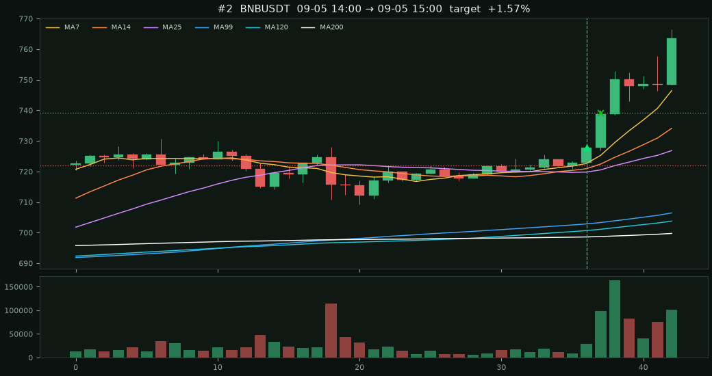
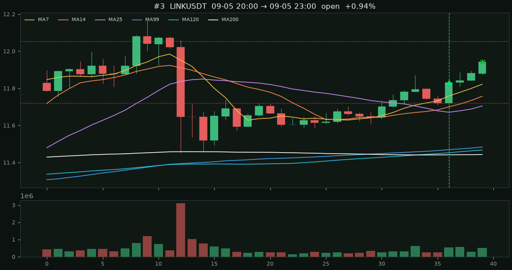

#1 · SNDKUSDT09-04 08:00 → 09-04 16:00
+1.82%
entry 1562.73 stop 1548.53 target 1591.13 exit 1591.13 target +1.82% fwd +1h -0.37% +4h +0.75% +8h +2.10% +24h +10.68%
USDT 永續 · MA7>14>25>99>120>200 且收盤量 > 前一根 × 2
· 收盤在 MA25 上方且離 MA25 ≤ 1.5%（像 BNB）
· 只要收漲陽線（收盤 > 開盤）
· 短均有點發散：MA7/MA25 0.20%～0.80%，且比 6 根前更散
收盤進場；停在訊號 K 低（太窄則 0.5%）、目標 2R、或 8 根時間停。
同標的重疊訊號預設不重做。加總％是各筆相加，不是組合複利。
掃 231 檔 · 原始訊號 3 · 進場 3
· 陽線 3
出場：2R 2 · 停損 0 · 時間 0 · 未平 1
· 收盤後 +1h +0.41% · +4h +1.81%
· +8h +3.98% · +24h +10.68%
entry 1562.73 stop 1548.53 target 1591.13 exit 1591.13 target +1.82% fwd +1h -0.37% +4h +0.75% +8h +2.10% +24h +10.68%
entry 727.69 stop 721.99 target 739.09 exit 739.09 target +1.57% fwd +1h +1.52% +4h +2.88% +8h +5.86% +24h —

entry 11.831 stop 11.72 target 12.053 exit 11.942 open +0.94% fwd +1h +0.08% +4h — +8h — +24h —
